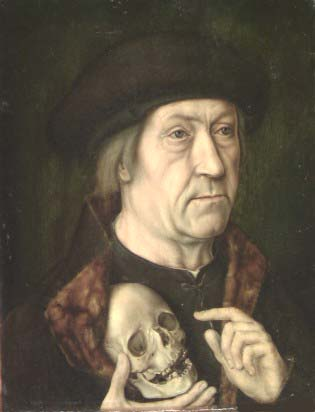
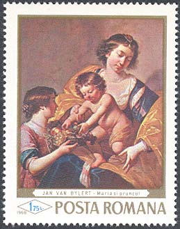
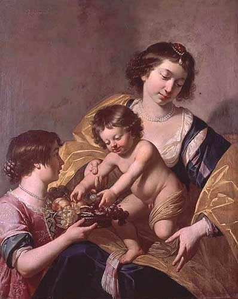

|
The National Brukenthal Museum in Sibiu Portrait of a Man with a Scull |
"Portrait of a Man with a Skull" (oil/oak panel, 42 x 32 cm,
inv. 100) is a work of the Dutch School. It belongs to the eight paintings of
a great value were stolen from the Arts Gallery of the Brukenthal Museum in
Sibiu and that returned to it 30 years later, in 1998. There is a short gallery note written
on paper on the back of the painting: "Le pour, traic/t de maistre Rogir van
der Weyde faict de maistre dirick van Haerlem"; and further there is a coat of
arms on a red seal (a lion with two tails, standing above the letters J.W.).
In the old catalogues of the museum (the oldest catalogue, catalogue nr. 36
and that of 1844, catalogue nr. 12) this painting is ascribed to an anonymous
Netherlandish painter. In the catalogue of 1893, it is ascribed to Dirck van
Haarlem. Then, in 1894, Dr. Theodor von Frimmel and later, in 1901, Michael
Csaki considered the portrait to be painted in Bartel Bruyn's style.

The continuous dialogue between art historians was to bring up
new facts: Hofstede de Groot had the opinion that the painting mentioned was
much earlier than Bruyn's work. In 1909 Csaki ascribed, with restraint, the
portrait "Man with a Skull" to Dierich Bouts. The ascription is refuted by
Erwin Panofsky in 1958. Max J. Friedländer was the one that gave the assigning
of this portrait to The Anonymous Master Of The Legend Of Saint Augustin, in an
art magazine "Der Cicerone". Leo van Puyvelde had the opinion, in 1958, that
Csaki's assigning to Dierich Bouts was the right one. He brought as arguments
the vigor of the style and the fact that the artist used to introduce symbolic
images about death (the skull), and time (the clepsydra) in his portraits. For
this reason the stamp shown above attributes the painting to Dierich Bouts.
These details are to be found in this painting, too: a distinguished mature
man is holding a skull, in his right hand, under his cloak, pointing to it
with the forefinger of his left hand. The stone-still sternness of his face,
as well as his gesture, seem an allusion to MEMENTO MORI. The style of the
artist, the way he put the imagines in his work, the smooth touch of the brush
on the canvas, and the attention he gave to every detail confirms the fact
that the portrait was the work of a very good artist at the end of the 15th
century.

The ascription of the portrait to Dierich Bouts is refuted by F.V.Levinson-Lessing (according to his letter from 1959). On the other hand the ascription to The Master of the Legend of Saint Augustin was refuted by Friedrich Winkler (1965), who suggested the names of Jan Mostaert and Albrecht Bouts. In spite of this reserve, Theodor Ionescu maintained and sustained the ascription made by Friedländer, that of The Master of the Legend of Saint Augustin, name that is still to be found in art magazines.
Fortunately, for us, the stamp collectors, these quarrels of experts are of a lesser importance. We have got a nice stamp, showing a controversial painting, that had a agitated past, and that makes it even more attractive. Just to notice that during 30 years we, the stamp collectors, were the only ones in Romania who had the "originals" in our collections. Fortunately, the situation changed since.
The stamp shown above was issued on March 28, 1968, as part of a set of six stamps and a souvenir sheet. The set was dedicated to great paintings in Romanian museums. Please point on it with the mouse index for more information.
Virgin and Child with Young St. John
Please see below a work of Jan van Bijlert, from Utrecht, about 1597/1598 - 1671, Utrecht, from museum's collection of Dutch paintings. Oil on canvas, 104 x 83 cm.
 |
 |
The stamp appeared in a set of six stamps, dedicated to works from the National Gallery, Bucharest. In fact the painting was transferred to Bucharest from the Bruckenthal Museum. The stamp appeared on 28th of September 1968, the print run being of 1,000,000 pieces. Michel 2710.
| Published:
07/14/2002. Revised:
03/28/03. Copyright © 2002 - 2003 by Victor Manta, Switzerland. All rights reserved worldwide. |